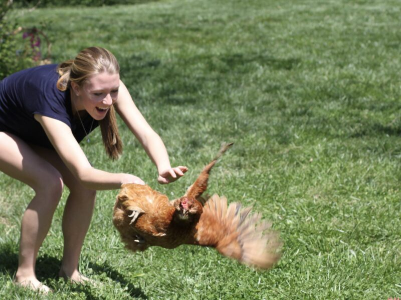

April 22, 2024
Finley’s Green Leap Forward announces $80,000 in new grants today!

It has been 10 years since Finley made the first two grants from Finley’s Green Leap Forward and we have a lot to smile about! Today, Earth Day 2024, we are announcing another $80,000 in grants to 5 great organizations. This brings the total since Finley started the fund to $580,000! Wow. We are all so proud of her and so grateful to all of you for making the planet a priority.
We are thrilled to be able to make a $16,000 grant to each of these organizations and to the people behind them doing great work—each project we support improves lives and sequesters carbon.
Earth Day 2024 Recipients:
- The Cacapon Institute
- Cool Earth
- Rainforest Trust
- Eden Projects
- Reserva: The Youth Land Trust
Tree planting and youth engagement in West Virginia’s Cacapon watershed.
Support for Indigenous communities as they preserve and protect rainforests in Peru and Papua New Guinea.
Supporting protection of tropical ecosystems by working with local and Indigenous peoples in South America and Asia.
Mangrove planting and restoration in the Tana Delta in Lamu County, Kenya.
Working with youth globally to create and support protected areas in biodiversity hotspots.
We’re equally as excited to be studying a new field for our grant opportunities—regenerative agriculture. We’re learning more about what makes healthy soils and how by managing them thoughtfully we can significantly reduce carbon in the atmosphere while achieving other great outcomes at the same time—like increasing the land’s ability to absorb heat and retain water, increasing biodiversity, reducing farmers’ dependence on fertilizers, and creating healthier food for all of us. A perfect opportunity for reversing the carbon load, caring for the planet, and making lives better at the same time!
We’re also smiling because Finley’s Green Leap Forward is now a registered 501(c)3 non profit! What that means for donors is that we will now be receiving donations directly. Please make note of the new instructions for future giving below and thank you for your support!
Wishing you all the very best Earth Day!
Julie
President, Finley’s Green Leap Forward
NEW DONATION INSTRUCTIONS:
Give online at www.finleysgreenleap.org
or
Mail a check made out to “Finley’s Green Leap Forward” to
Finley’s Green Leap Forward
6437 Old Bust Head Road
Broad Run, VA 20137
Join us for these Upcoming Events!
Give Local Piedmont – May 14, 2024
Twenty one days until Give Local Piedmont Day! We hope you’ll join in the fun on May 14th as we compete with other non-profits for incentive grants from NPCF and for bonus dollars provided by the PATH Foundation. If you want to contribute, this is your chance to leverage your donation! Day-of competition is on May 14th. The giving portal opens on April 30th for early donations. Select Finley’s Green Leap Forward! https://www.givelocalpiedmont.org/giving-events/glp24
Old Bust Head Benefit 5K – October 26, 2024
Gather with us for a beer and a run at the 6th annual Old Bust Head Benefit 5K on October 26th benefiting Finley’s Green Leap Forward. Run in costume, bring your dog, or run to win!